Class 4: Quasi-Newton Methods
- Last week we introduced some methods for solving nonlinear equations, the workhorse method was Newton's method, which relied on iteratively linearlizing the nonlinear problem around an iterate. Leading to the iteration rule:
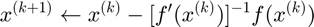
- One issue with Newton's method is that it required computing the Jacobian (matrix of derivatives) of the problem at every iteration, 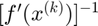. While this can be done numerically it may be computatitionally intensive.
- Quasi-Newton methods are simply approaches to approximate the jacobian rather than computing it directly (either numerically or analytically).
Contents
Secant Method
Suppose 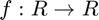 is univariate.
While computing the numerical derivative would only require a single function evaluation, we can save even that by just using the previous iterate:
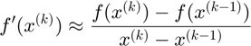
The secant method iteration just replaces the derivative in Newtons method with this secant approximation:
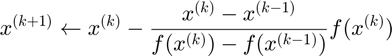
This illustrates the main concept of quasi-newton methods: use previously computed information to efficiently approximate the derivative information of the current iterate.
Formally, the secant method requires 2 initial guesses. Although often we just compute the derivative for the first iteration.
Let's recall our univariate function:
f = @(x) 2 + exp(x) - 3.*(x.^2);
X = -2:.1:4;
%Fx = 2 + exp(X) - 3.*(X.^2);
plot(X, f(X), X, zeros(size(X)))
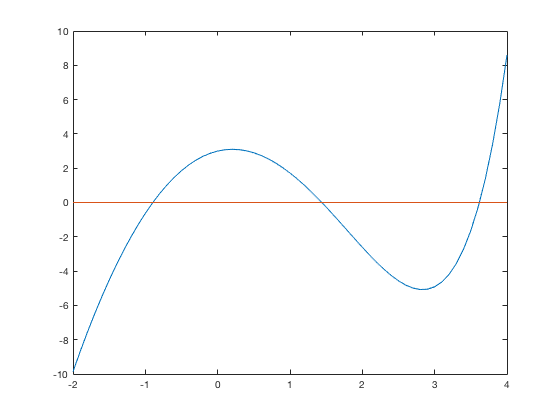 So to implement the secant method:
% Assign initial values x = 0; xOld = 1; fOld = f(xOld); % Secant iterations: tol = 1e-8; maxit = 100; for iter =1:maxit fVal = f(x); fprintf('iter %d: x = %.8f, f(x) = %.8f\n', iter, x, fVal); if abs(fVal) < tol break else xNew = x - ( (x - xOld) / (fVal - fOld) )* fVal; xOld = x; x = xNew; fOld = fVal; end end
iter 1: x = 0.00000000, f(x) = 3.00000000 iter 2: x = 2.34060815, f(x) = -4.04778771 iter 3: x = 0.99631611, f(x) = 1.73034902 iter 4: x = 1.39888437, f(x) = 0.18004596 iter 5: x = 1.44563702, f(x) = -0.02504405 iter 6: x = 1.43992794, f(x) = 0.00021426 iter 7: x = 1.43997637, f(x) = 0.00000024 iter 8: x = 1.43997643, f(x) = -0.00000000
Broyden's Method
Broyden's method generalizes the secant method to a multidimensional problem. However, how do we update the entire Jacobian with a single pair of function evaluations.
Effectively, for two values of 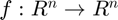 we need to solve
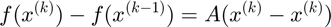
But has 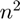 values, and we only have 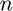 equations.
We will supplement this with information from the previous approxmiation of the Jacobian, which we hope is "close" to the current Jacobian. Where close is determined according to the Frobenius norm.
This leads to the iteration rule:
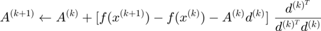
Where 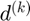 is the column vector 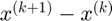. Note that the term in brackets is 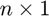 while the fraction is 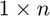.
We could use 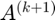 directly, but then we would still need to solve a linear equation to get the next iterate. Instead, it turns out a matrix multiplication can directly deliver us an approximation of the inverse Jacobian. Then we have:
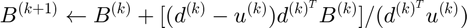
Working this out will take some algebra, but at least note that the denominator here is a scalar, so it is just a matrix multiplication in practice.
Let's implement it to solve our cournot model from last time. We'll need an initial guess at the Jacobian, so we'll use a numerical derivative:
q = [2; 3];
fVal = cournot(q)
iJac = inv(myJac('cournot', q))
fVal =
-0.9257
-2.1714
iJac =
-1.5113 0.0286
0.0020 -1.1809
Now for the Broyden iterations:
maxit = 100; tol = 1e-6; for iter = 1:maxit fnorm = norm(fVal); fprintf('iter %d: q(1) = %f, q(2) = %f, norm(f(x)) = %.8f\n', iter, q(1), q(2), norm(fVal)); if norm(fVal) < tol break end d = - (iJac * fVal); q = q+d; fOld = fVal; fVal = cournot(q); u = iJac*(fVal - fOld); iJac = iJac + ( (d - u) * (d'*iJac) )/ (d'*u); end
iter 1: q(1) = 2.000000, q(2) = 3.000000, norm(f(x)) = 2.36051746 iter 2: q(1) = 0.662994, q(2) = 0.437703, norm(f(x)) = 0.40465064 iter 3: q(1) = 0.898254, q(2) = 0.797154, norm(f(x)) = 0.14241697 iter 4: q(1) = 0.846374, q(2) = 0.699278, norm(f(x)) = 0.01472917 iter 5: q(1) = 0.839108, q(2) = 0.688562, norm(f(x)) = 0.00054648 iter 6: q(1) = 0.839652, q(2) = 0.688757, norm(f(x)) = 0.00008842 iter 7: q(1) = 0.839552, q(2) = 0.688804, norm(f(x)) = 0.00001637 iter 8: q(1) = 0.839568, q(2) = 0.688796, norm(f(x)) = 0.00000006
You will recall that using the derivative information directly took fewer iterations to converge, however each iteration was more computationally intensive since
- Had to compute numerical Jacobian (or supply analytic Jacobian).
- Had to solve a linear equation as part of iteration.
What's going wrong?
Inevitably, when you are trying to solve a nonlinear system, its not going to work (at least the first few attempts). Just remember... it's all your fault.
- Using a packaged solver can minimize coding errors in the solution algorithm itself.
- If you are coding your Jacobian, its a good idea to at least check your code against a numerical derivative.
- Check the coding of your function by computing it at some points where you can calculate the answer with paper and pencil.
- "Explore" (plot or grid search) your algorithm to attempt to find a good start point.
- Re-scale your function to avoid ill-conditioning. Try to keep "reasonable inputs" in the same order of magnitude.
- Be mindful of bounds, if you have a 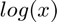 in your equations, you defintely don't want to evaluate at 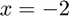, but the solver won't realize that unless you tell it.
- If you try to solve a system with no solution, the computer is not going to tell you this, it will just keep trying.
- If you try to solve a system with kinks or discontinuities, your mileage may vary (to put it mildly).
- Finally, Newton's method can always blame you for not being in the neighborhood of the solution.
Some last advice, sometimes you can transform your equations to make them closer to linear. In the extreme why solve:
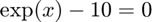
When you can solve:
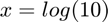
However it may also be that a system like:
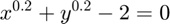
% $$ x^{0.1} + y^{0.4} - 2 = 0 $$ % % Can be more easily be solved after re-scaling to get closer to CRTS: % % $$ (x^{0.2} + y^{0.2})^5 - 32 = 0 $$ % % $$ (x^{0.1} + y^{0.4})^4 - 16 = 0 $$ % % The broad lesson here is that the computer wants to solve the math % problem you give it, if that problem needs to be manipulated slightly in % ways that are not "economically intuitive" that is fine. In general, the % closer to a _linear_ problem you have, the easier it will be to solve % with Newton or quasi-Newton methods, since both follow the principle of % successive linearization. %
Gravity with Gravitas
This class is short, but next class is our first applicaiton, so I'll use some of the time to set it up.